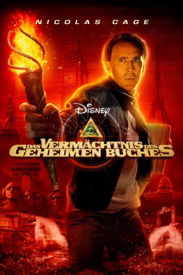

gesehen am 16.05.2015
gesehen am 16.05.2015Alternativ: National Treasure: Book of Secrets gesehen am 16.05.2015
 
 IMDB-Wertung: 6.5 / 10
IMDB-Wertung: 6.5 / 10  Metascore:
Metascore: 
Nachdem Dr. Ben Gates das Geheimnis der Unabhängigkeitserklärung entschlüsselt hat, wartet schon das nächste Abenteuer auf ihn und seine Mitstreiter Abigail Chase und Riley Poole. Als man eine Seite eines verlorenen Buches findet, taucht darin der Name Thomas Gates als Verschwörer auf, der mitverantwortlich für das Attentat auf Präsident Abraham Lincoln sein soll. Sein Großvater ein Mörder? Ben muss die Wahrheit suchen.
Jahr: 2007
Dauer: 124 Minuten
FSK: 12
Land: USA Studio: Walt Disney Studios Motion PicturesTonspuren: DTS - ,
Untertitel:
Auflösung: 720p (1280×528) Größe: 4034 MB
Genre: Action, Abenteuer, Familie, Mystery, Thriller
Regisseur:  Jon Turteltaub
Jon Turteltaub
Drehbuch: Marianne Wibberley, Cormac Wibberley, Gregory Poirier, Marianne Wibberley, Cormac Wibberley
Soundtrack: Trevor Rabin
Darsteller:
 Nicolas Cage als Ben Gates
Nicolas Cage als Ben Gates Justin Bartha als Riley Poole
Justin Bartha als Riley Poole Diane Kruger als Abigail Chase
Diane Kruger als Abigail Chase Jon Voight als Patrick Gates
Jon Voight als Patrick Gates Helen Mirren als Emily Appleton
Helen Mirren als Emily Appleton Ed Harris als Mitch Wilkinson
Ed Harris als Mitch Wilkinson Harvey Keitel als Sadusky
Harvey Keitel als Sadusky Bruce Greenwood als The President
Bruce Greenwood als The President Ty Burrell als Connor
Ty Burrell als Connor Michael Maize als Daniel
Michael Maize als Daniel Timothy V. Murphy als Seth
Timothy V. Murphy als Seth Armando Riesco als FBI Agent Hendricks
Armando Riesco als FBI Agent Hendricks Albert Hall als Dr. Nichols
Albert Hall als Dr. Nichols Joel Gretsch als Thomas Gates
Joel Gretsch als Thomas Gates Christian Camargo als John Wilkes Booth
Christian Camargo als John Wilkes Booth Brent Briscoe als Michael O'Laughlen
Brent Briscoe als Michael O'Laughlen William Brent als Charles Gates
William Brent als Charles Gates Zachary Gordon als Lincoln Conspiracy Kid
Zachary Gordon als Lincoln Conspiracy Kid Oliver Muirhead als Control Room Guard
Oliver Muirhead als Control Room Guard Larry Cedar als Control Room Guard
Larry Cedar als Control Room Guard Patricia DiZebba als Press Secretary's Secretary
Patricia DiZebba als Press Secretary's Secretary Emerson Brooks als FBI Agent Steppes
Emerson Brooks als FBI Agent Steppes Demetri Goritsas als Asa Trenchard
Demetri Goritsas als Asa Trenchard David Ury als Barkeep
David Ury als Barkeep Don Abernathy als Photographer , uncredited
Don Abernathy als Photographer , uncreditedDatei: X:\2-Dilogie(N-Z)\Vermächtnis\Vermächtnis des geheimen Buches, Das (2007, FSK12, 1280x528).mkv seit 02.02.2015
Festplatte: HD Collection-2(A-Z)-3(A-M)
 Alle Filme aus Gruppe '2-Dilogie(N-Z)\Vermächtnis'
Alle Filme aus Gruppe '2-Dilogie(N-Z)\Vermächtnis'